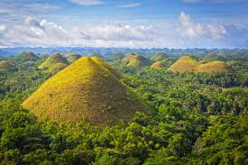
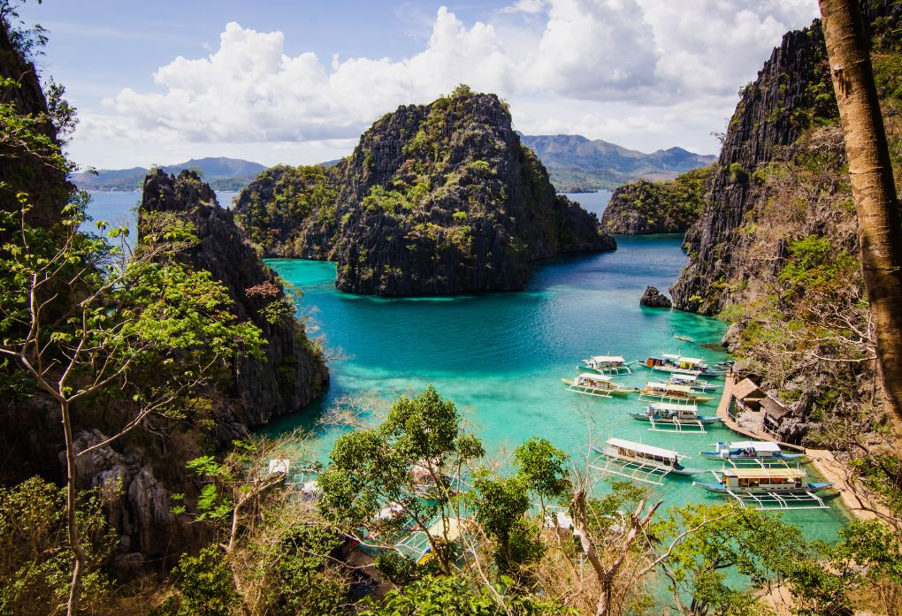

Mayon Volcano
Mayon, also known as Mount Mayon and Mayon Volcano is an active stratovolcano in the province of Albay in Bicol, Philippines.

Chocolate Hills
The Chocolate Hills are a geological formation in the Philippine province of Bohol.

El Nido, Palawan
El Nido is a Philippine municipality on Palawan island. It’s known for white-sand beaches, coral reefs and as the gateway to the Bacuit archipelago, a group of islands with steep karst cliffs.